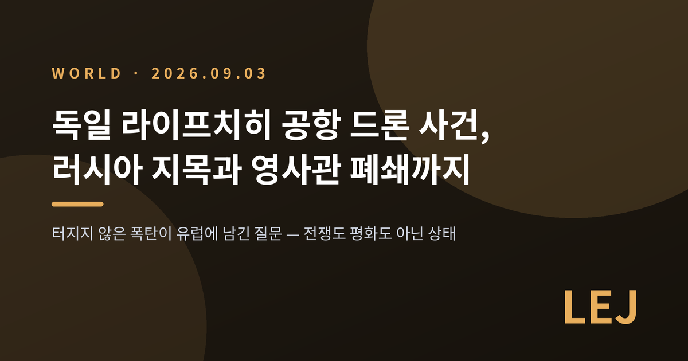
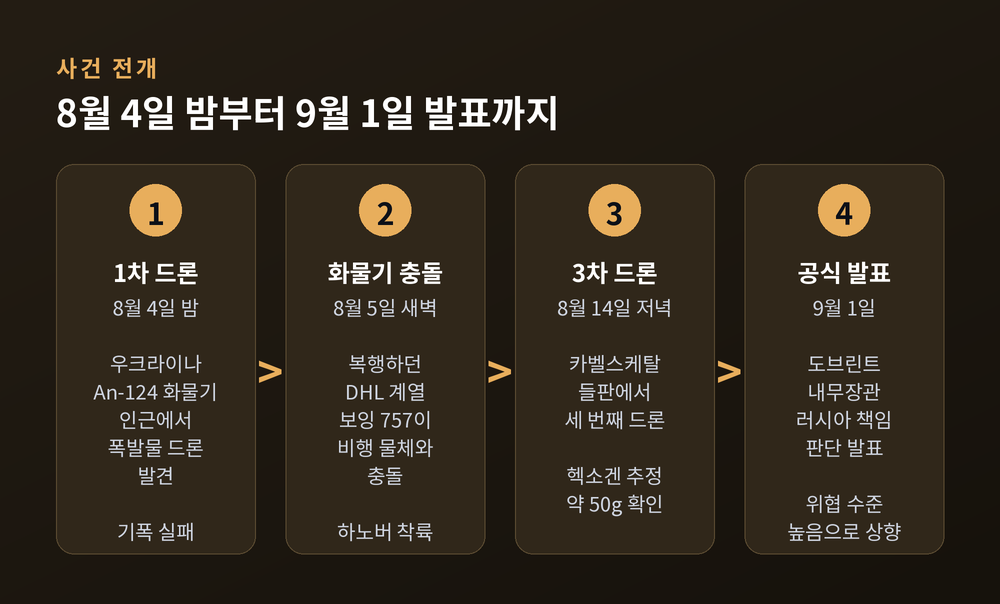
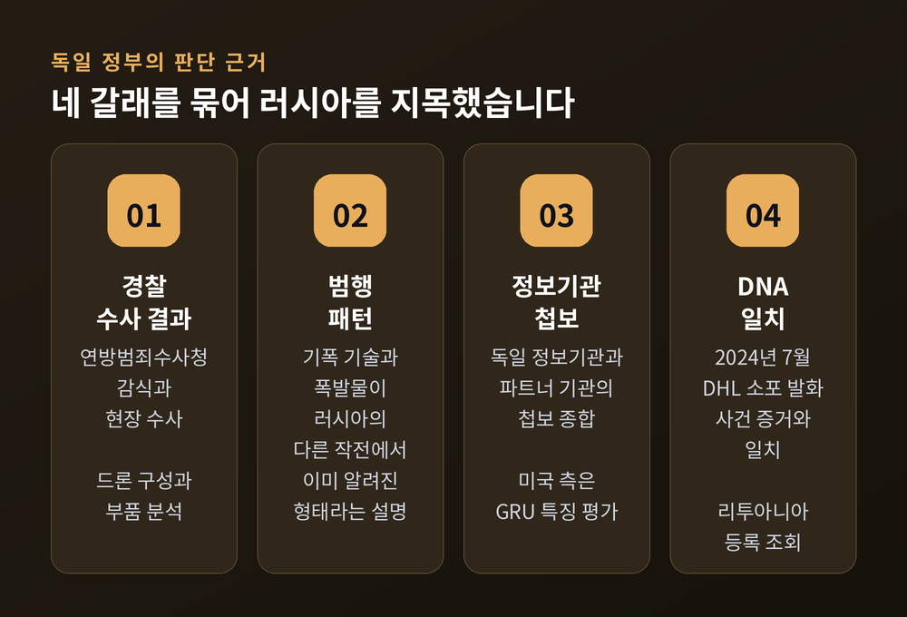
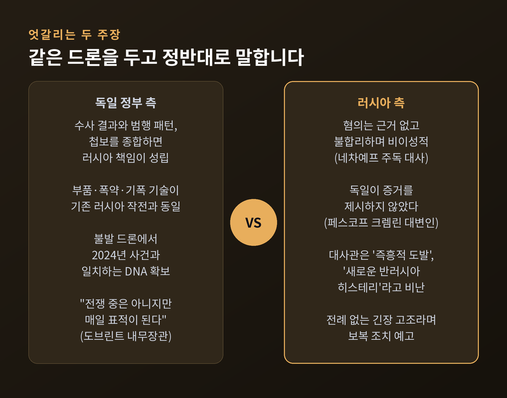
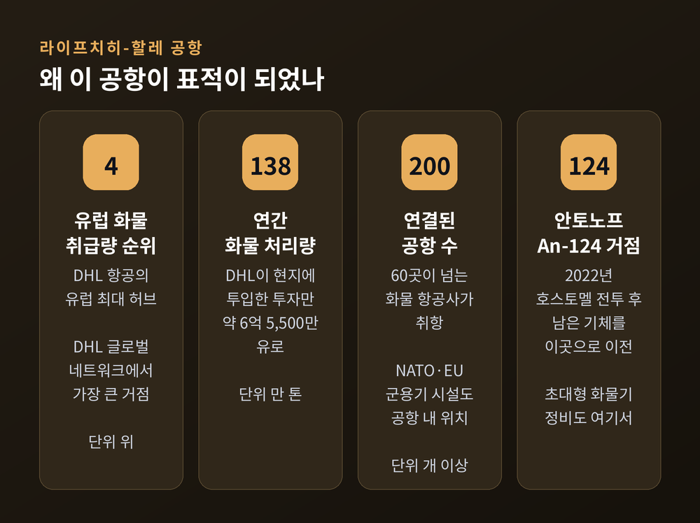
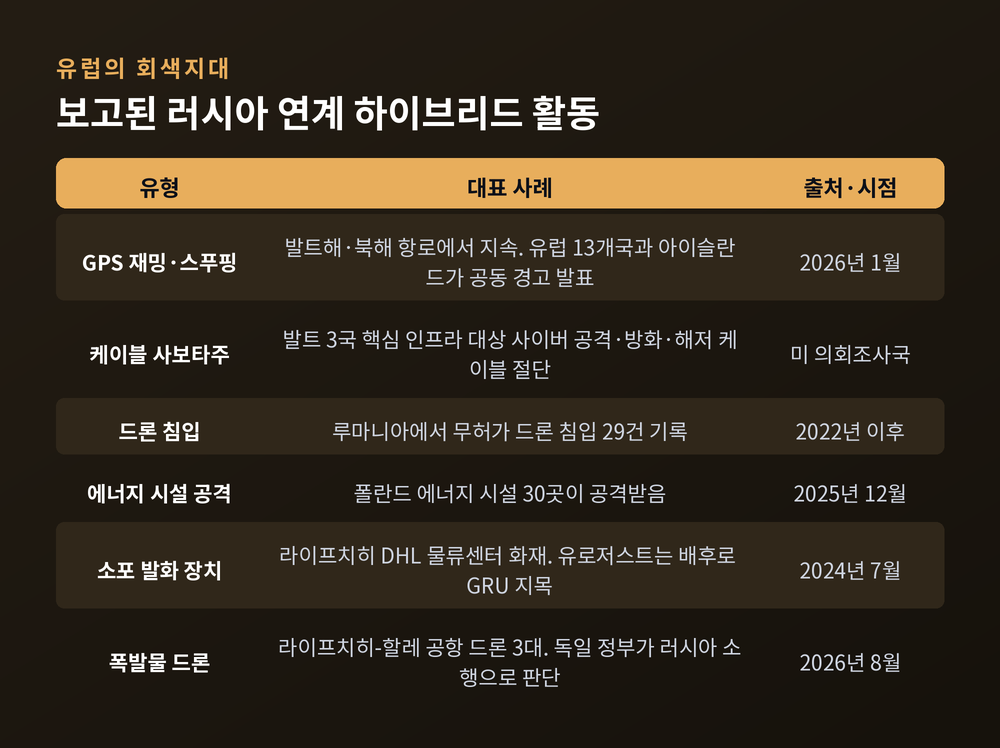

터지지 않은 폭탄이 유럽에 남긴 질문
이번 글에서는 독일 라이프치히-할레 공항에서 벌어진 폭발물 드론 사건과, 독일 정부가 러시아를 배후로 지목하며 내놓은 대응 조치를 정리해 보겠습니다.
사건의 경과와 양측 주장, 그리고 유럽 안보에 남긴 물음까지 차례로 살펴보겠습니다.

2026년 8월 4일 밤부터 5일 새벽 사이, 독일 작센주의 라이프치히-할레 공항에서 두 건의 무인기 사건이 잇따랐습니다.
첫 번째는 폭발물을 실은 드론이었습니다.
공항 화물 제한구역에 주기 중이던 우크라이나 안토노프항공의 An-124 화물기 인근에서 발견됐습니다.
전자레인지 크기의 쿼드콥터형 기체였고, 투하 장치와 SIM 카드 두 장이 달린 목적 제작 드론이었다고 전해집니다.
실린 폭약은 고성능 플라스틱 폭약 계열로, 800g 안팎이었다고 보도됐습니다.
매체에 따라 PETN, 혹은 Semtex와 PETN의 조합으로 서로 다르게 전해집니다.
폭발은 일어나지 않았습니다.
기폭장치가 결함이었거나 기폭 회로가 분리돼 있었기 때문이라는 설명입니다.
CCTV 분석을 근거로 드론이 화물기 날개에 부딪힌 뒤 튕겨 나와 떨어졌다는 보도가 있고, 화물기 인근에서 발견돼 폭발물처리반이 해체했다는 보도도 있습니다.
두 번째 사건은 같은 날 밤 이어졌습니다.
공항 폐쇄로 착륙을 포기하고 다시 상승하던 DHL 계열 보잉 757 화물기가 정체불명의 비행 물체와 충돌했습니다.
이 화물기는 하노버에 예정에 없던 착륙을 했습니다.
열흘 뒤인 8월 14일 저녁에는 공항 서쪽에 접한 카벨스케탈의 들판에서 세 번째 드론이 발견됐습니다.
독일 연방범죄수사청은 여기서 군용 폭약 헥소겐으로 추정되는 물질 약 50g을 확인했다고 밝혔습니다.
수사관 보고서는 범인들이 알려진 것보다 훨씬 큰 규모의 공격을 염두에 뒀을 가능성을 언급했습니다.

발표는 사건 발생 약 한 달 뒤인 9월 1일에 나왔습니다.
알렉산더 도브린트 연방내무장관은 기자회견에서 이렇게 말했습니다.
경찰 수사 결과와 범행 패턴, 그리고 독일 정보기관과 파트너 기관의 첩보를 종합하면 러시아의 책임이 성립한다는 것입니다.
구체적인 근거로는 드론의 구성과 부품, 폭발물, 기폭 기술이 꼽혔습니다.
독일 정부는 이 요소들이 러시아가 유럽에서 벌인 다른 하이브리드 작전, 그리고 러시아-우크라이나 전쟁에서 쓰인 것들과 이미 알려진 형태라고 설명했습니다.
수사 과정에서 나온 물증도 있습니다.
사건 닷새 뒤 수사관들은 불발 드론에서 DNA 흔적을 확보했습니다.
이 DNA는 2024년 7월 20일 같은 공항 DHL 물류센터에서 일어난 소포 발화 사건의 증거와 일치했고, 유럽 DNA 데이터베이스에서 리투아니아에 등록된 인물로 조회됐다고 보도됐습니다.
미국 쪽 평가도 더해졌습니다.
8월 하순 미국 정보 소식통은 이 드론이 러시아 군정보총국(GRU)이 쓰는 장치의 특징을 보인다고 전했습니다.
다만 짚어둘 대목이 있습니다.
독일 정부는 귀속 판단만 공개했을 뿐, 증거의 상당 부분은 공개하지 않았습니다.
그래서 지금 확인된 것은 "독일 정부가 이렇게 판단했다"는 사실이며, 사법적으로 확정된 결론은 아직 아닙니다.

바데풀 외무장관이 같은 날 발표한 조치는 외교적으로 상당히 강한 축에 듭니다.
| 조치 | 내용 |
|---|---|
| 총영사관 폐쇄 | 본(Bonn) 주재 러시아 총영사관을 9월 18일부로 폐쇄 |
| 문화원 폐쇄 | 베를린 '러시아 하우스' 운영 협정 해지 |
| 대사 초치 | 세르게이 네차예프 주독 러시아 대사를 불러 항의 |
| 제재 확대 | 하이브리드 공격 맥락에서 러시아 인사들을 EU 제재 명단에 추가 제안 |
| 입국 통제 | 러시아 국적자 입국·비자 심사 강화 |
| 그림자 선단 | 제재를 우회해 러시아산 석유를 나르는 유조선단 압박 강화 |
국내 대비도 함께 진행됐습니다.
8월 8일 메르츠 총리 주재로 연방안보회의가 화상 소집됐고, 8월 18일에는 코흐슈테트에 드론 보안 연구시설이 문을 열었습니다.
독일은 항공안전법 개정을 추진해 연방경찰이 드론을 더 빨리 탐지하고 요격할 수 있도록 권한을 넓히는 중입니다.
도브린트 장관은 독일의 위협 수준 평가를 '일반'에서 '높음'으로 올렸다고 밝혔습니다.
그가 남긴 한 문장이 지금 유럽의 상태를 압축합니다.
"우리는 전쟁 중은 아니지만, 매일 하이브리드 공격의 표적이 되고 있습니다."
러시아는 혐의를 전면 부인했습니다.
주독일 러시아 대사관은 독일의 조치를 즉흥적으로 꾸며낸 도발이자 '새로운 반러시아 히스테리'라고 비난했습니다.
혐의 자체는 터무니없다는 것이 대사관의 입장입니다.
네차예프 대사는 독일의 주장이 근거 없고 불합리하며 비이성적이라고 반박했습니다.
독일의 조치를 전례 없는 긴장 고조로 규정하며, 대응 없이 넘어가지 않겠다고 예고했습니다.
드미트리 페스코프 크렘린궁 대변인은 독일이 증거를 제시하지 않은 채 긴장을 높이고 있다고 주장했습니다.
러시아 외무부는 독일 대사대리를 초치해 항의했습니다.
정리하면 이렇습니다.
독일은 물증과 첩보가 러시아를 가리킨다고 보고, 러시아는 공개된 증거가 없다고 맞섭니다.
현재 공개된 자료만으로 제3자가 어느 쪽이 맞는지 판정하기는 어렵습니다.

라이프치히-할레는 평범한 지방 공항이 아닙니다.
이곳은 DHL 항공의 유럽 최대 허브이자 DHL 글로벌 네트워크 전체에서 가장 큰 거점입니다.
화물 취급량 기준으로 유럽 4위이며, 연간 약 138만 톤의 화물을 처리합니다.
전 세계 200개 이상 공항과 이어져 있고, 60곳이 넘는 화물 항공사가 취항합니다.
공항 안에는 NATO와 EU 군용기를 위한 시설도 있습니다.
우크라이나와의 연결도 깊습니다.
안토노프항공은 2022년 호스토멜 공항 전투 이후 남은 기체를 이곳으로 옮겨 운용해 왔습니다.
초대형 화물기 An-124의 정비도 여기서 이뤄집니다.
서방 매체들은 이번에 표적이 된 기체를 우크라이나로 물자를 실어 나르는 데 쓰이는 항공기로 설명했습니다.
민간 물류와 군수 수송, 우크라이나 항공사의 거점이 한 활주로 위에 겹쳐 있는 셈입니다.
2024년의 기억도 겹칩니다.
그해 7월 20일 새벽, 같은 공항 DHL 물류센터에서 소포 컨테이너에 불이 붙었습니다.
진동 마사지 베개 안에 숨긴 전자 타이머가 발화 장치였습니다.
리투아니아 당국은 이 사건을 미국행 화물기 폭발을 노린 예행연습으로 판단했고, EU 사법기구 유로저스트는 배후로 GRU를 지목했습니다.
예전에는 이런 사건이 '원인 미상 화재'로 남곤 했습니다.
지금은 DNA와 부품 대조를 거쳐 특정 국가의 이름이 공개적으로 호명됩니다.

이번 사건은 단발성 사고가 아닙니다.
미국 의회조사국 보고서는 러시아 하이브리드 활동의 목록을 이렇게 정리합니다.
사보타주, 사이버 공격, 영공 침범, 해저 케이블 절단, 드론 침입, GPS 재밍, 이주민 무기화입니다.
사례도 축적돼 있습니다.
발트해와 북해에서는 GPS 재밍과 스푸핑이 이어져, 2026년 1월 유럽 13개국과 아이슬란드가 공동 경고를 냈습니다.
발트 3국은 핵심 인프라를 겨냥한 사이버 공격과 방화, 케이블 사보타주를 겪었습니다.
루마니아는 2022년 이후 무허가 드론 침입 29건을 기록했고, 폴란드는 2025년 12월 에너지 시설 30곳이 공격받았습니다.
여기서 어려운 질문이 나옵니다.
NATO 조약 제5조는 언제 작동하는가입니다.
제4조는 협의 조항으로, 2022년 이후 여러 차례 발동됐습니다.
반면 제5조는 이번 사안과 관련해 발동된 적이 없습니다.
NATO는 하이브리드 위협도 제5조 발동 사유가 될 수 있다는 입장을 밝혀 왔습니다만, 실제 문턱이 어디인지는 정해두지 않았습니다.
싱크탱크들의 지적은 냉정합니다.
유럽에는 아직 신뢰할 만한 하이브리드 억지력이 없고, 제5조 아래 구간에서 상대에게 실질적 비용을 물릴 구조도 부족하다는 것입니다.
바데풀 외무장관은 독일이 러시아와 더 이상 명백한 평화 상태에 있지 않다고 말했습니다.
이번 드론에 실린 폭약이 터졌다면 어땠을까요.
공항 한복판에서 화물기가 폭발했을 것이고, 그때도 이것을 '회색지대'라 부를 수 있었을지는 의문입니다.
마르크 뤼터 NATO 사무총장은 베를린이 분명한 증거를 제시했다고 평가하고, 독일의 대응 조치를 환영했습니다.
우르줄라 폰데어라이엔 EU 집행위원장은 EU가 독일과 완전한 연대에 서 있다고 밝혔습니다.
그는 이런 하이브리드 공격이 사실상 '새로운 일상'이 되고 있다며 더 강한 대응을 예고했습니다.
EU는 추가 제재 패키지를 준비 중입니다.
한국과 무관한 이야기로 보이지만, 그렇지 않습니다.
첫째는 물류입니다.
라이프치히-할레는 유럽 항공화물의 중심축입니다.
이곳의 운항이 멈추면 유럽을 경유하는 국제 특송과 항공화물 전반이 흔들립니다.
다만 이번 사건이 한국 물류에 미친 구체적 피해 규모는 확인되지 않았습니다.
둘째는 방산입니다.
NATO 회원국들은 2035년까지 GDP의 5%를 방위·안보 지출에 쓰기로 합의했습니다.
폴란드는 2022년 한국과 총 442억 달러 규모의 총괄계약을 맺었고, 2026년에는 EU의 유럽 안보 행동(SAFE) 프로그램을 통해 440억 유로 규모 저리 차관 도입 계약을 체결했습니다.
2026년 한국 방산 수출은 약 377억 달러 규모로 역대 최고치가 예상된다는 전망도 나옵니다.
유럽의 불안이 커질수록 한국 방산의 수주 기회는 늘어납니다.
동시에 한국은 러시아와의 관계라는 별도의 셈법도 안고 있습니다.
기회와 부담이 같은 방향에서 함께 온다는 점을 잊기 어렵습니다.

몇 가지를 지켜볼 만합니다.
9월 18일 본 총영사관 폐쇄가 예정대로 이행되는지가 첫 관문입니다.
러시아가 예고한 보복이 어떤 형태일지도 아직 알 수 없습니다.
독일 외교관 추방이나 시설 폐쇄 같은 상호주의 조치가 뒤따를 가능성이 거론됩니다.
EU 제재 패키지의 범위도 변수입니다.
'하이브리드 공격 맥락'이라는 새 항목이 제재 명단에 어떻게 반영되는지에 따라, 앞으로 유사 사건의 처리 방식이 정해집니다.
수사 자체도 끝나지 않았습니다.
실행범의 신원과 지시 계통은 공개되지 않았습니다.
리투아니아에 등록된 DNA의 주인이 누구인지도 확인되지 않았습니다.
이 공백이 메워지지 않는 한 러시아의 부인은 계속 반복될 것입니다.
정리하면 이렇습니다.
터지지 않은 폭탄 하나가, 유럽이 오래 미뤄둔 질문을 다시 꺼냈습니다.
전쟁도 평화도 아닌 상태를 무엇이라 부르고, 거기에 어떻게 답할 것인가.
독일은 영사관 문을 닫는 것으로 첫 답을 내놨습니다.
그 답이 충분했는지는, 다음 드론이 어디서 발견되는지가 말해줄 것입니다.